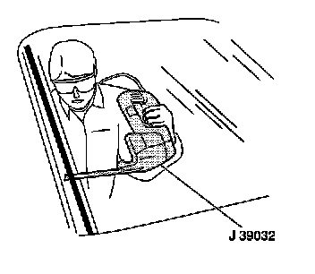
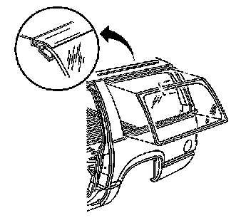

Quarter Window Replacement
QUARTER WINDOW REPLACEMENT
TOOLS REQUIRED
- J 24402-A Glass Sealant Cold Knife Remover
- J 39032 Stationary Glass Removal Tool
- Urethane Adhesive Kit GM P/N 12346392 or equivalent
- Isopropyl Alcohol or Equivalent
- Cartridge-type Caulking Gun
- Commercial-type Utility Knife
- Razor Blade Scraper
- Suction Cups
- Plastic Paddle
REMOVAL PROCEDURE
1. CAUTION:
- Refer to Glass and Sheet Metal Handling Caution.
- Refer to Cracked Window Caution.
IMPORTANT: Before cutting out a stationary window, apply a double layer of masking tape around the perimeter of the painted surfaces and the interior trim.
Open the liftgate.
2. CAUTION: If broken glass falls into the defroster outlets, it can be blown into the passenger compartment and cause personal injury.
Cover the following parts to protect from broken glass:
1. The upper dash pad
2. The defroster outlets and A/C outlets
3. The seats and the carpeting
3. Remove the right or left side applique.
4. Disconnect the electrical connector from the quarter window.
5. If the antenna on the quarter is damaged, replace the quarter window.

6. IMPORTANT: Keep the cutting edge of the tool against the quarter window from inside the vehicle. This will allow the urethane adhesive to be separated from the window.
Use J 24402-A, J 39032, or equivalent in order to remove the quarter window.
- Leave a base of urethane on the pinchweld flange.
- The only suitable lubrication is clear water.

7. With the aid of an assistant, use the suction cups to remove the window from the opening.
INSTALLATION PROCEDURE
1. Install the quarter window.
2. Install the right of left side applique.
3. Connect the electrical connector to the quarter window.
4. Ensure that the radio has reception.
5. Remove the double layer of masking tape around the perimeter of the painted surfaces and the interior trim.
6. Close the liftgate window.